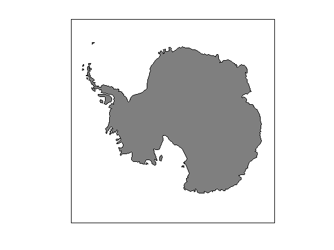
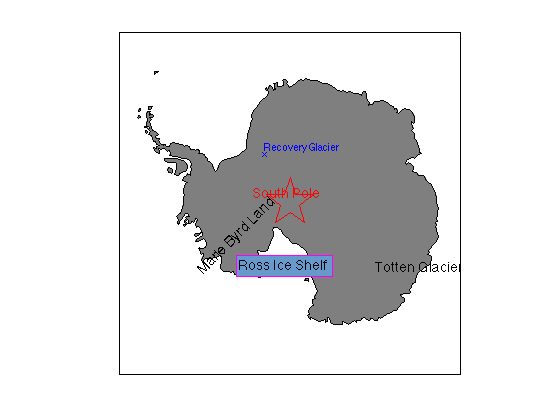
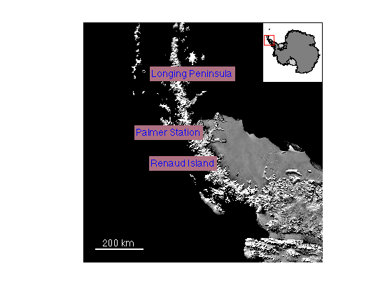
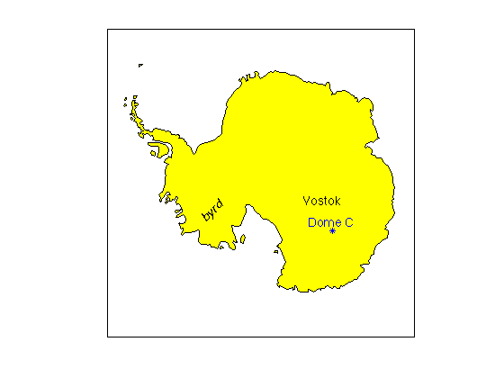
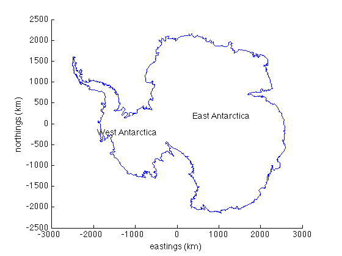

scarlabel and corelabel
scarlabel and corelabel are part of Antarctic Mapping Tools for Matlab (Greene et al., 2017). Click here for a complete list of functions in AMT.
These functions label Antarctic features on a map. Feature names and locations correspond to 25,601 locations identified by the Scientific Committee on Antarctic Research (SCAR) in their Composite Gazetteer.
Contents
When to use which function
This package comes with a handful of similar-sounding function names. So which one to use?
Ice Cores: For ice cores, use coreloc to retrieve the lat/lon coordinates of any ice core identified by the iceREADER group. Use corelabel to label those features on a map.
Everything Else: For just about any feature you can think of, use scarloc to retrieve lat/lon coordinates of any feature or place south of 60°S. Use scarlabel to label those features on a map. If you have created a map and you want to click around on that map to find out what stuff is called, use the all-new scarclick function, which will label everything you click on. If you do not know the name of a particular feature, use scarclick to label any mapped feature you click on.
Syntax
scarlabel(FeatureNames) scarlabel(FeatureNames,'TextProperty',PropertyValue) scarlabel(FeatureNames,'Marker','MarkerStyle') scarlabel(...,'km') h = scarlabel(...) [h,feature,feature] = scarlabel(...)
Description
scarlabel(FeatureNames) labels Antarctic features core location if a map is current. Multiple FeatureNames may be entered as a cell array (e.g., {'McMurdo Station','Palmer Station', 'Casey Station'} ). If the current axes are not map axes, polar stereographic cartesian coordinates are assumed.
scarlabel(FeatureNames,'TextProperty',PropertyValue) formats labels with text properties as name-value pairs.
scarlabel(FeatureNames,'Marker','MarkerStyle') places a marker at the center location.
scarlabel(...,'km') places labels on cartesian coordinates in polar stereographic kilometers.
h = scarlabel(...) returns the handle h of the label.
[h,feature,feature] = scarlabel(...) returns geographic coordinates of the feature.
Example 1
Before labelling we'll initialize a map with Matlab's inaccurate and ugly built-in coast line:
antmap
load coast
patchm(lat,long,[.5 .5 .5])
 Now start labelling:
scarlabel('Totten Glacier') scarlabel('Recovery Glacier',... 'fontsize',10,... 'HorizontalAlignment','left',... 'marker','x',... 'color','blue') scarlabel('Ross Ice Shelf',... 'edgecolor','magenta',... 'fontangle','italic',... 'backgroundcolor',[.4 .6 .8],... 'fontsize','20') scarlabel('Marie Byrd Land','rotation',45) scarlabel('South Pole',... 'fontweight','bold',... 'color','red',... 'marker','rp',... 'markersize',50)
Example 2: Label and format multiple locations at once
This example uses the modismoa function to make a 1000-km-wide MODIS MOA map of the Antarctic Peninsula, then we place multiple labels with one command. I'm using my rgb function to get RGB values of mauve by its name.
close % (closes previous figure) modismoa('graham land',1000,'inset','northeast') myplaces = {'Renaud Island','Longing Peninsula','Palmer Station'}; scarlabel(myplaces,'color','b','backgroundcolor',rgb('mauve')); scalebar('color','w')
Example 3: corelabel
Some ice core locations are not listed in SCAR's primary database, but they're listed by iceReader. For ice core locations and labelling, we have coreloc and corelabel, which behave identically to scarloc and scarlabel.
figure load coast antmap patchm(lat,long,'y') corelabel('Vostok') corelabel('Dome C','color','b','marker','b*') corelabel('byrd','rotation',45,'fontangle','italic')
Example 4: Polar stereographic cartesian kilometers
If current axes are not map coordinates, labeling is performed in polar stereographic cartesian coordinates (meters). If, however, your data are plotted in polar stereographic kilometers, ensure correct labeling with the 'km' tag:
load AMTdata % some sample data figure plotps(glat{1},glon{1},'km') xlabel 'eastings (km)' ylabel 'northings (km)' scarlabel({'West Antarctica','East Antarctica'},'km')
scarlabel and scarclick user interface video tutorial
The scarclick function allows you to click around on a map to identify features. Here is a short video example of how to use scarclick:
Known Issues
1. Unfortunately, scarloc and scarlabel are plagued by problems with special characters. This includes letters with accents and umlauts. Sometimes using letters without accents will work. Other times locations may not be recognized by these functions.
2. In some cases, the SCAR Composite Gazetteer contains multiple entries for the same feature, and sometimes the coordinates of the multiple entries do not match exactly. I have dealt with this issue by arbitrarily picking the first listed entry for each unique feature and I've deleted duplicates. I did the same kind of culling for a previous release of Antarctic Mapping Tools, but I did not necessarily keep the same entries in both cullings. As a result, if you have used a version of scarloc or scarlabel from before January 2015, in some cases may appear to have moved with the update.
Citing this Dataset
The SCAR Composite Gazetteer database can be found here. SCAR has kindly requested that Gazetteer data should be cited as:
Secretariat SCAR (1992, updated 2015). Composite Gazetteer of Antarctica, Scientific Committee on Antarctic Research. GCMD Metadata http://gcmd.nasa.gov/records/SCAR_Gazetteer.html
Citing AMT
If this function or any other part of Antarctic Mapping Tools is useful for you, please cite the paper that describes AMT.
Greene, C. A., Gwyther, D. E., & Blankenship, D. D. Antarctic Mapping Tools for Matlab. Computers & Geosciences. 104 (2017) pp.151-157. doi:10.1016/j.cageo.2016.08.003.
Author Info
These functions and supporting documentation were created by Chad A. Greene, July 2013, updated August 2014 and January 2015. Chad is a researcher at the University of Texas Institute for Geophysics (UTIG).